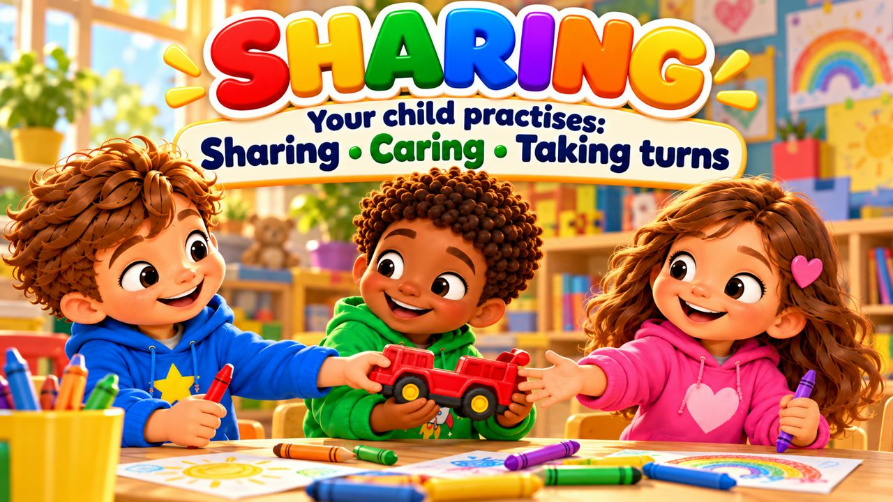
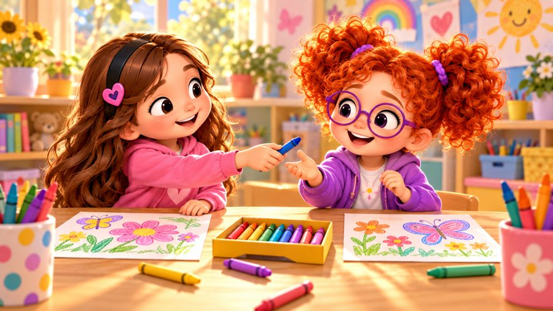
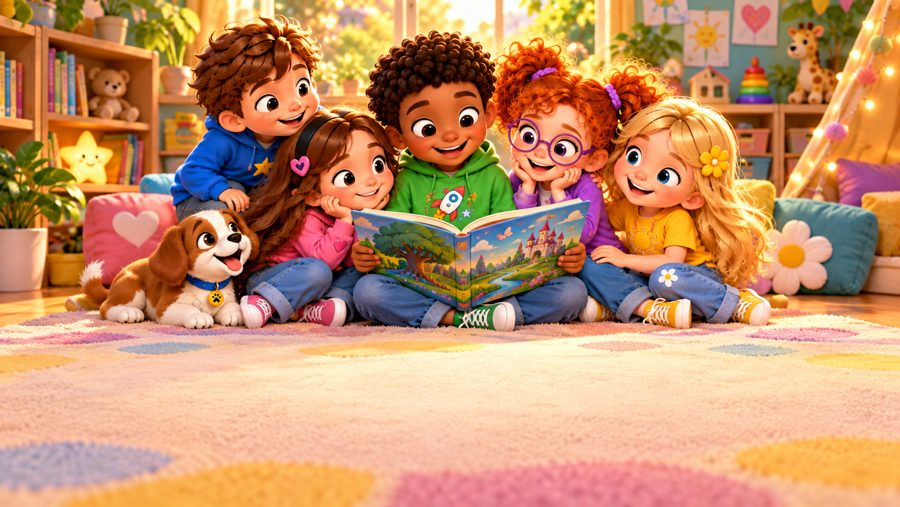

Sharing Makes Us Happy
A song about sharing, taking turns and respecting a friend who is still using a toy.
Free activities, colouring pages, quiz and certificate will appear with the video release.

▶💡 Why this skill matters: sharing & kind boundaries
Sharing helps children make friends, play together longer and feel part of a group. It also includes kind boundaries: a child can offer a turn, share a little, or say “I’m still using it” politely. Praise generous moments, and help your child find fair solutions such as taking turns or playing together.
👨👩👧 What your child learns
- Offer something when there is enough
- Take turns or play together
- Respect kind boundaries
💬 Talk about it after the song
- What can you offer a friend?
- What can you say if you are still using a toy?
- How can five friends enjoy one book?
🏅 Quiz & Certificate
Watched the song together? Now read each question aloud — your child points to the right picture. Answer all 6 questions and your child earns a printable certificate!
🔒 The name is only used to draw the certificate on your device. We don't save or send anything.
You did it! 🎉
All 6 answers are right! Type your child's name to make the certificate.
🖨️ Free printables
Free for home and classroom use. Print on A4 or Letter paper.
🖼️ Scenes from the song






🎵 More songs


🎤 Lyrics – Sharing Makes Us Happy
[Intro]
I've got something,
you've got something too.
Maybe we can find
a way to share for two!
A little for me,
a little for you...
Sharing can make
more fun for everyone too!
[Verse 1]
Mia brought some crayons
to the table one day.
Red and yellow,
green and gray.
Rosie looked around
and couldn't find blue.
Mia smiled and said:
"I've got one.
You can use it too!"
They colored flowers,
stars and skies,
Big bright rainbows,
butterflies.
One box of crayons,
two friends there...
And twice the fun
when they could share!
[Pre-Chorus]
I can share,
I can take turns.
That's one way
friendship grows and learns.
If there's enough
for me and you...
We can enjoy it
together too!
[Chorus]
Sharing makes us happy!
Sharing makes us smile!
A little turn for you,
then mine after a while!
We can share the crayons!
We can share the game!
There's enough fun
for everyone to play!
Share a little!
Care a little!
Find a way
to play together!
Me and you,
side by side...
Sharing makes the fun
grow twice as wide!
[Verse 2]
Max was playing
with his favorite car.
Jay came over:
"Can I play?"
Max hugged it close:
"I'm using this one now."
Then stopped and thought
of another way.
"You can use the truck,
and when I'm done,
you can have a turn
with this one."
Jay smiled:
"Okay!
That sounds great!"
They built a road
and didn't have to wait.
Sharing doesn't always mean
I give it right away.
Sometimes sharing means:
"You'll have a turn
when I'm done playing today."
[Pre-Chorus]
I can share,
I can take turns.
That's one way
friendship grows and learns.
If there's one
for me and you...
We can find
what works for two!
[Chorus]
Sharing makes us happy!
Sharing makes us smile!
A little turn for you,
then mine after a while!
We can share the crayons!
We can share the game!
There's enough fun
for everyone to play!
Share a little!
Care a little!
Find a way
to play together!
Me and you,
side by side...
Sharing makes the fun
grow twice as wide!
[Verse 3]
Lily had some apple slices
packed inside her snack.
She saw Rosie
had forgotten hers
inside her backpack.
"I have plenty.
Would you like some?"
Lily asked her friend.
"Thank you!"
Rosie smiled.
And they shared them
till the end.
Later Jay had
one small book.
Five friends wanted
all to look!
So they sat
together on the rug,
Turned the pages
one by one.
Sometimes we can
split things up.
Sometimes we can
take a turn.
Sometimes sharing
means together...
Everyone can look and learn!
[Bridge - Call and Response]
Lots of crayons?
SHARE SOME!
Only one toy?
TAKE TURNS!
I'm still using it?
SAY, "WHEN I'M DONE!"
Enough for a friend?
OFFER SOME!
Can we play together?
YES, WE CAN!
Do I have to share everything?
NO, I DON'T!
Can I find a kind solution?
YES!
What makes fun grow?
SHARING!
[Break]
Sharing is kind.
But sharing doesn't mean
I must give away
everything that's mine.
I can say:
"I'm using this now."
I can say:
"You can have a turn next."
I can offer another toy.
I can find a way
for both of us to play.
Sharing works best
when we listen
and care about each other.
[Final Chorus]
Sharing makes us happy!
Sharing makes us smile!
A little turn for you,
then mine after a while!
Share a color!
Share a snack!
Share a story!
Pass it back!
Take a turn!
Play together!
Find a way
that works much better!
Give a little!
Care a little!
Kindness grows
when we work together!
Me and you,
side by side...
Sharing makes the fun
grow twice as wide!
SHARE!
CARE!
TAKE A TURN!
There's enough
for all of us to learn!
[Outro]
A little for me...
A little for you...
Or take a turn
when I am through.
Share with kindness.
Share with care.
It's more fun
when we can share!